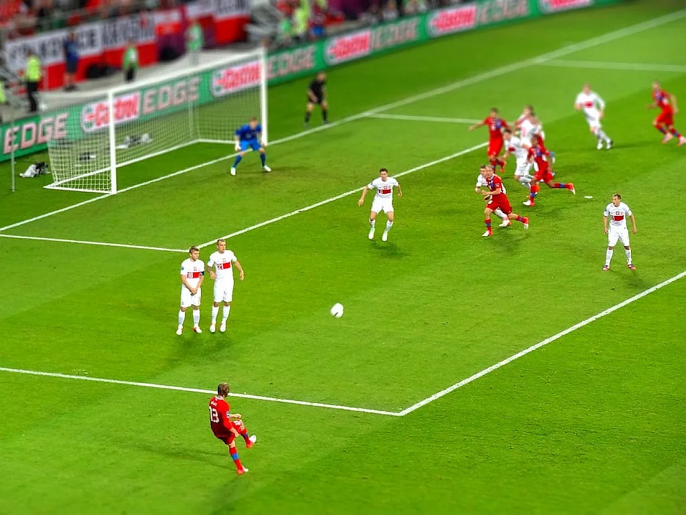

경찰, '홍명보 감독 선임 의혹' 대한축구협회 압수수색
축구 국가대표팀 감독 선임 과정을 둘러싼 의혹에 대해 경찰이 강제수사에 착수했다. 서울경찰청 금융범죄수사대는 6일 오전 9시쯤부터 충남 천안의 대한축구협회 본부와 서울 종로구 축구회관에서 동시에 압수수색을 벌였다. 경찰은 이날 수사관과 디지털포렌식 인력을 투입해 감독 선임 관련 자료와 관계자들의 휴대전화, PC 데이터 등을 확보한 것으로 전해졌다. 이번 압수수색은 관련 의혹이 제기된 지 상당한 시일이 지난 뒤에 이뤄진 첫 강제수사라는 점에서도 주목받고 있다.
이번 압수수색 영장에는 업무방해 등의 혐의가 적시된 것으로 알려졌다. 경찰은 협회 내 경쟁력강화위원회와 국가대표 지원팀, 월드컵 지원팀 등을 대상으로 자료를 확보했다. 수사의 초점은 홍명보 감독 선임 당시 협회 고위 관계자들이 직위를 이용해 경쟁력강화위원회와 이사회 결정 과정에 부당하게 개입했는지 여부를 확인하는 데 맞춰진 것으로 전해졌다. 경찰은 확보한 자료를 분석해 실제 의사결정이 어떤 경로로 이뤄졌는지 재구성할 방침인 것으로 전해졌다.

의혹의 발단은 감독 선임 발표 당시로 거슬러 올라간다. 당시 브리핑에서는 이임생 전 기술발전위원장이 "전권을 위임받아 직접 선임했다"고 밝혔다. 그러나 이임생 전 위원장은 애초 감독 선임을 논의하는 경쟁력강화위원회 소속이 아니었던 데다, 선임 절차가 단 10일 만에 마무리된 것으로 알려지면서 절차적 정당성에 의문이 꾸준히 제기돼 왔다. 축구계 안팎에서는 실권이 없는 기술발전위원장이 단독으로 감독을 결정했다는 설명을 그대로 받아들이기 어렵다는 지적이 이어졌다. 정식 절차를 밟았다면 경쟁력강화위원회의 논의와 검증을 거쳤어야 한다는 게 비판의 핵심이다.
이런 가운데 이임생 전 위원장은 최근 "정몽규 전 회장이 홍명보 감독 선임을 지시했다"는 취지로 언급하며 논란에 다시 불을 지폈다. 협회 안팎에서는 회장이 기술발전위원장에게 감독 선임 전권을 부여한 것 자체가 정상적인 절차로 보기 어렵다는 시각이 많다. 경찰 수사는 정몽규 전 회장과 이임생 전 위원장이 실제로 어떤 방식으로 의사결정에 관여했는지를 규명하는 데 집중될 전망이다. 두 사람의 진술이 서로 엇갈릴 경우 수사가 장기화할 가능성도 제기된다.

정부도 이번 사안을 예의주시하고 있다. 문화체육관광부는 그동안 감독 선임 논란의 경위를 살펴봐 왔으며, 유인촌 문체부 장관은 "절차상 문제가 있다면 정상적인 선임으로 볼 수 없다"는 입장을 밝힌 바 있다. 협회 자율성과 행정 감독 사이의 균형을 어떻게 맞출지도 함께 관심사로 떠오르고 있다. 축구협회를 향한 정부 차원의 문제 제기가 이어져 온 만큼, 이번 압수수색을 계기로 감독 선임을 둘러싼 협회 내부 의사결정 구조 전반에 대한 점검 요구도 커질 것으로 보인다.
경찰은 이번에 확보한 자료를 토대로 관련자 소환 조사 등 후속 수사를 이어갈 방침이다. 강제수사가 실제로 이뤄진 만큼 그동안 의혹 제기 수준에 머물렀던 사안이 본격적인 사법적 판단의 영역으로 넘어갔다는 평가가 나온다. 수사 결과에 따라 협회 지도부의 책임 문제로까지 논란이 번질 가능성도 배제할 수 없는 상황이다.